Super Smash Bros 4 Guide

SSB4 Characters
Press Any Button To Begin
In the new Super Smash Bros. 4, there are 48 characters to choose from, and three variations of Mii fighters. The majority of characters originate from Nintendo games, like Link from The Legend of Zelda, and Charizard from Pokemon. Some characters that are guests to the game are Pac-man, Megaman, and Sonic. Some of these characters have participated in all four Smash versions, like Mario and Samus. Others are new to us, like Shulk and Rosalina. This website will categorize the fighters into five groups: Tanks, Swordsmen, Projectile Specialists, Combat, and Balanced.

Tanks refer to characters with rather slow speed but packs a massive punch. This category includes Bowser, Charizard, Ganondorf, Donkey Kong (left), and King Dedede. All of these characters have powerful, but slow smash attacks, and their recoveries are not the most reliable. Their side smashes are also a powerful lunge forward, except for Dedede throwing Gordos (right), and their basic combos are only 2-4 phases. Bowser and Charizard's neutral special is a flame thrower, King Dedede is an inhale, and Ganondorf and Donkey Kong's are a massive punch. Charizard and Donkey Kong's down special deal damage around them, Ganondorf and Bowser's strike down from the sky, and King Dedede charges and launches his hammer. All of their aerials are pretty effective.
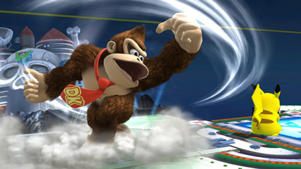 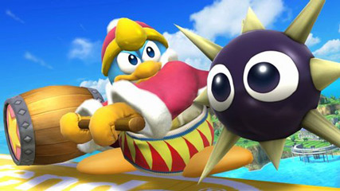A handful of characters are skilled at wielding swords, namely Link, Toon Link, Marth (left), Lucina, Meta Knight, Ike, and Shulk (right). All of them have strong, reliable smashes and aerials, but their recoveries are not as much as well. Link and Toon Link's are exceptions to this category because their specials are all projectiles, whereas the others ultilize their swords. The main difference between Link and Toon Link is their size, since Toon Link is smaller, therefore more agile and lighter. Marth and Lucina have the same moveset, but the tip of Marth's sword deals more than the hilt, and Lucina's sword is balanced. Meta Knight specailizes in dealing quick flurries of slashes, and is very swift. Ike is relatively slower, but deals more damage. Shulk's neutral special is called Monado Arts, and they alter his stats. Marth, Lucina, Ike, and Shulk have a counter for their down specials.
.jpg) 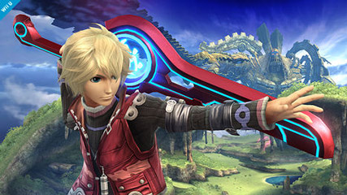
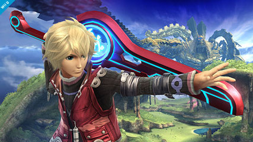
Some characters specialize in firing projectiles to both rack up damage and possibly a killing blow. This would include Zelda, Samus, Zero Suit Samus, Ness (left), R.O.B., Robin (right), Bowser Jr., Villager, Duck Hunt, Mega Man, and Olimar. Their smash attacks and aerials are generally weaker, and their basic combos aren't as effective. Their up specials are quite reliabel recoveries. All of their specials except up specials fire projectiles, except Zero Suit Samus' down, R.O.B.'s side, Bowser Jr.' side, Robin's down, and Ness' down. There are two types of projectiles: energy based and solid projectiles. People whose projectiles are energy based include Zelda, Zero Suit, Ness, Robin, and Megaman. Physical projectiles are launched by Bowser Jr. and Duck Hunt. Samus and R.O.B. deal both kinds. Villager has a physical projectile for his side, but his neutral stops and picks up projectiles, then fires them back. If an item is thrown at him, then it will be stopped, pocketed, and retrieved as Villager's item. Villager's down special is also peeculiar, and has three stages. He first plants a seed, which trips other players, then waters it, which pushes opponents back, and then a tree grows, lauching anyone standing on top of it when it grew. Villager may chop down the tree, also dealing a big blow, the tree considered a physical projectile. Olimar uses his Pikmin to battle, with a maximum of three at a time. His special produces them when he is on the ground, his side throws them at opponents, and his down rearranges their order. There are five types of Pikmin, each with a unique effect.
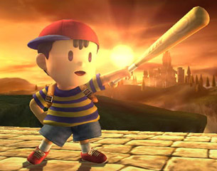 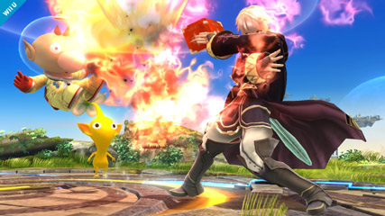A few characters fight by using only their body and combative weapons, such as Captain Flacon, Sonic, Little Mac, Wario, and Jigglypuff. They all have strong smashes, with the higher mark from Little Mac, and deal a flurry of strikes on their combos. Their aerials are decent, except Little Mac on a lower mark. Captain Falcon (right) has fire based strikes for his specials, and has good power along with his quick speed. Sonic is exceptionally fast and specializes in dealing quick blows to knock down opponents. Little Mac (right) is a beast on ground, dealing high amounts of damage and knockback, but burdened with his pitiful aerials and recovery. Wario is relatively slower and has good power, and has a specialty of eating everything to boost his attacks. His neutral special consumes items and grabs oponents with his mouth, which charges up his down special, and his side is his motorcycle to ride across the stage. Jigglypuff (left) is a very unique character. He is balanced overall, with decent combos and smashes. His neutral is a chargable rollout, his side is a simple pound, but his up special is singing, putting opponents into a temporary nap. His up special gives him no recovery, but is made up for the fact that he has five jumps, the most in the game. His down special is also difficult to execute, needing to be right next to the foe to deal a massive blow.
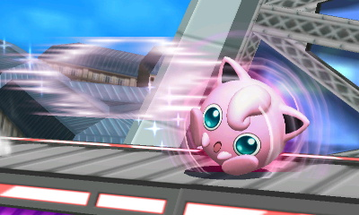 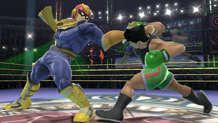The majority of characters are balanced between projectiles and combat: Mario, Luigi, Dr. Mario, Peach, Yoshi, Shiek, Diddy Kong, Fox, Falco, Kirby, Pikachu, Greninja, Lucario, Pit, Dark Pit, Mr. Game and Watch, Rosalina and Luma, Wii Fit Trainer, Palutena, and Pac-Man. Each of them are balanced in power and defense, and have reliable attacks and recoveries. Each of them have one or two projectiles. Mario, Luigi, and Dr. Mario are quite similar in their smashes, combos, neutral, and up specials. Mario's down special is different because it sprays water when the others do a damage dealing spin move. Mario and Dr. Mario's side special is a cape that reflects projectiles, whereas Luigi charges up and launches himself at opponents. Peach mainly has good reach, and is most notable for her side and up smashes being very reliable. Yoshi can use his tongue to both grab and trap opponents in his mouth, and is the only character with a physical shell. Shiek is very agile and uses needles and bombs along with her physical attacks. Diddy Kong is not as good a character overall, but is small and agile enough to deal good damage. Fox and Falco are very similar in their good combos and smashes, but Falco's reflector shoots out and his gun shoots slower, more powerful blows. Kirby (left) is a very balanced reliable character, and has multiple jumps for recovery. He is best known for his neutral special, which inhales opponents and copies thier neutral special, but only one at a time. They can be lost and changed by pressing a taunt. Pikachu is mainly known for his specials, his neutral being a traveling pojectile and his up being a swift movement toward inputted directions. His side is a charged up headbutt like Luigi's, and his down special launches a thunderbolt directly above himself to strike down, sending a shock wave around him. His forward smash is also handy because it does not make contact with opponents and reliable range. Greninja is very agile and a powerful fighter. His smashes uses two katanas made of water for his smash attacks. His neutral is a chargable water shuriken, his up similar to Pikachu's, and his down is a counter. His side can teleport him side to side, the appearance area based on his shadow's placement with the control stick. Lucario uses his aura to add flare on his attacks. Pit (right) and Dark Pit are winged archers that can use their bows for close ranged combat. Their smashes are also very powerful, and their side specials are powerful uppercuts. Mr. Game and Watch is most unique for his fun utilities for battle, using a lit match for his side smash, and a frying pan flinging sausages for his special. Rosalina fights alongside her partner Luma. The player mainly controls Rosalina, who fights with cosmic magic. The majority of her attacks are boosted by Luma, her neutral and side special only available with Luma present. Luma is easier to kill, but if killed, will respawn in about thirteen seconds. Wii Fit Trainer (middle) bases her attacks around yoga moves. Her most notable move is her down special, which boosts her attack and heals some damage. Palutena is most unique for her smashes, her side and down smashes using her wings, and her up smash a pillar of light in front of her, with high vertical distance but low horizontal. Finally, Pac-man (left) uses the four ghosts in his smashes. His neutral special can launch eight different types of projectiles.
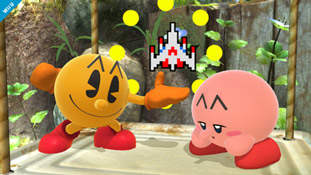 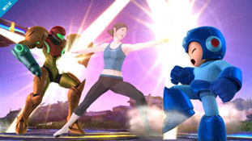 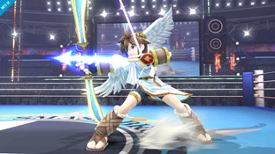